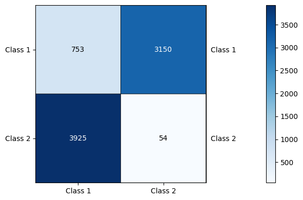
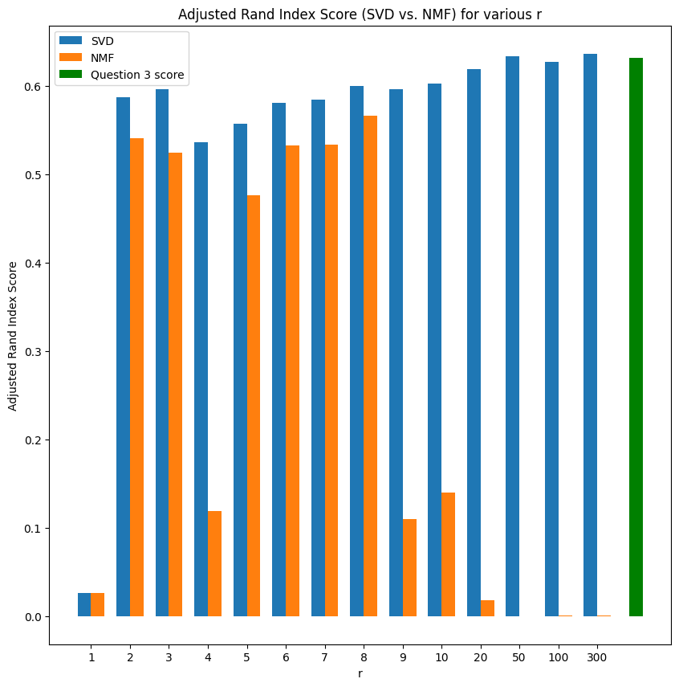
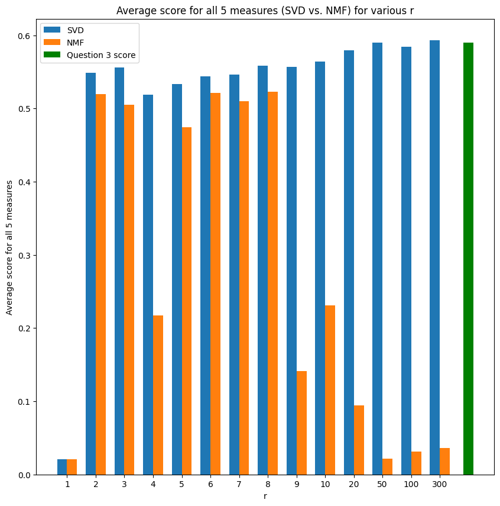
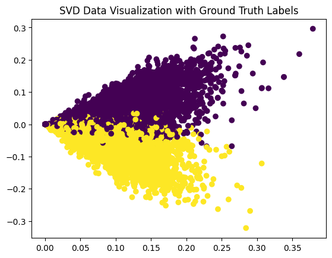
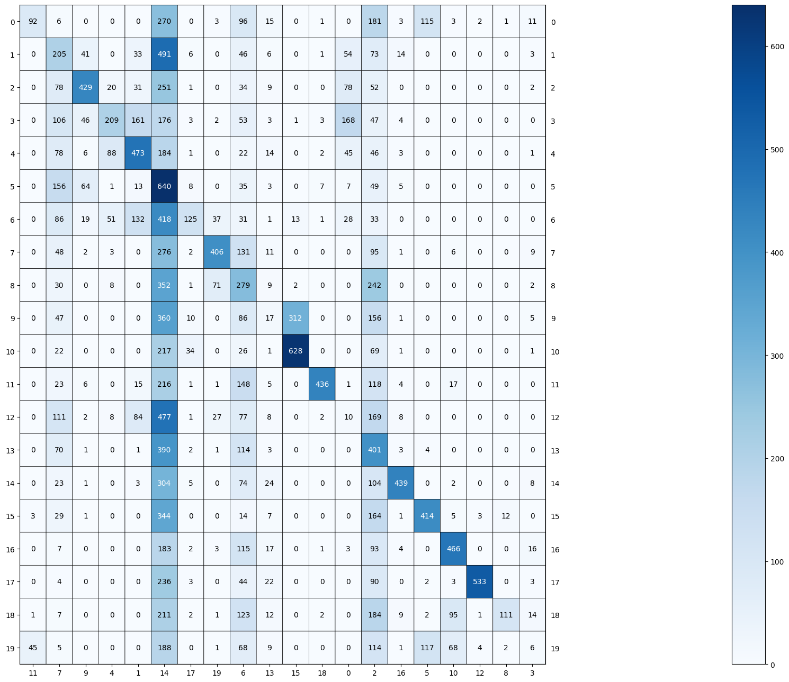
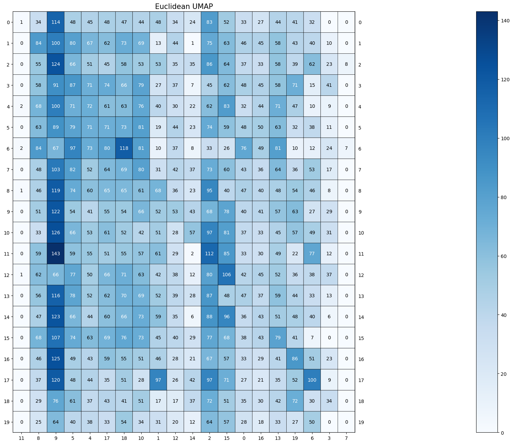
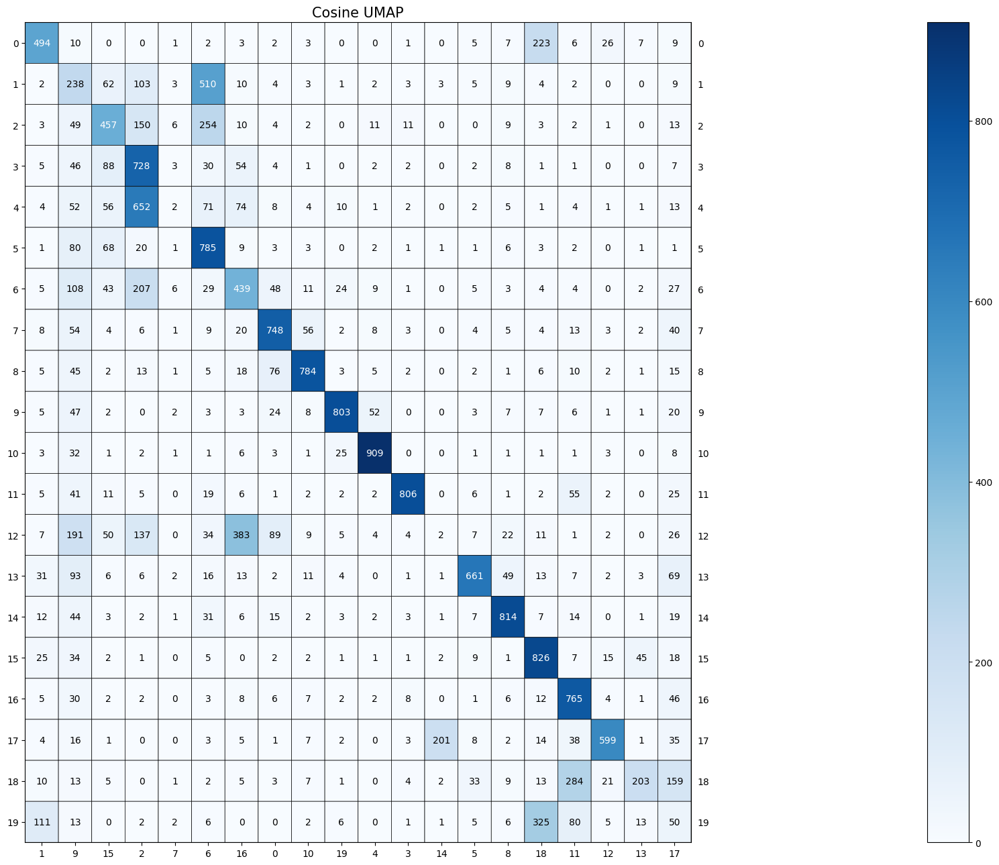
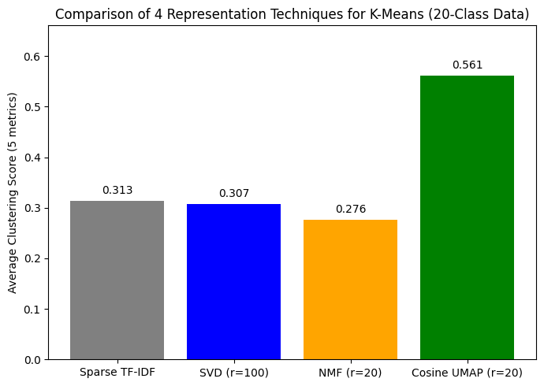
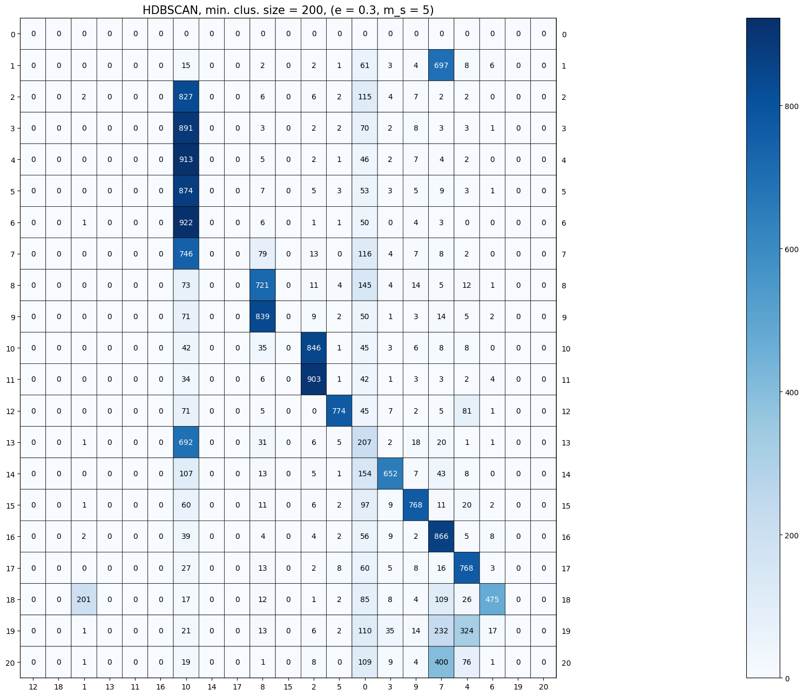

import warnings
warnings.filterwarnings('ignore')
from sklearn.datasets import fetch_20newsgroups
from sklearn.feature_extraction.text import CountVectorizer, TfidfTransformer, TfidfVectorizer
from sklearn.cluster import KMeans, AgglomerativeClustering, DBSCAN
from sklearn.metrics.cluster import contingency_matrix, homogeneity_score, completeness_score, adjusted_rand_score, adjusted_mutual_info_score, v_measure_score
from sklearn.metrics import confusion_matrix
from scipy.optimize import linear_sum_assignment
from sklearn.decomposition import TruncatedSVD, NMF
from plotmat import plot_mat
from matplotlib import pyplot as plt
import numpy as np
import random
import pandas as pd
import umap.umap_ as umap
import hdbscan
import joblib
np.random.seed(0)
random.seed(0)
categories = ['comp.graphics','comp.os.ms-windows.misc','comp.sys.ibm.pc.hardware',
'comp.sys.mac.hardware','rec.autos','rec.motorcycles','rec.sport.baseball','rec.sport.hockey']
dataset = fetch_20newsgroups(subset = 'all', categories = categories,shuffle = True, random_state = 0,remove=('headers','footers'))
vectorizer = CountVectorizer(stop_words='english',min_df=3)
tfidf_transformer = TfidfTransformer()
data_vec = vectorizer.fit_transform(dataset.data)
features = tfidf_transformer.fit_transform(data_vec)
ground_truth = []
for label in dataset.target:
if label < 4:
ground_truth.append(0)
else:
ground_truth.append(1)
print('Shape of TF-IDF matrix: ',features.shape)
Shape of TF-IDF matrix: (7882, 23522)
kmeans = KMeans(n_clusters=2, init='k-means++', max_iter=5000, n_init=200, random_state=0)
kmeans.fit(features)
plot_mat(contingency_matrix(ground_truth,kmeans.labels_),size=(6,4),xticklabels = ['Class 1','Class 2'],yticklabels = ['Class 1','Class 2'],pic_fname = 'Q2.png')

print("Homogeneity: %0.3f" % homogeneity_score(ground_truth, kmeans.labels_))
print("Completeness: %0.3f" % completeness_score(ground_truth, kmeans.labels_))
print("V-measure: %0.3f" % v_measure_score(ground_truth, kmeans.labels_))
print("Adjusted Rand-Index: %.3f"% adjusted_rand_score(ground_truth, kmeans.labels_))
print("Adjusted Mutual Information Score: %.3f"% adjusted_mutual_info_score(ground_truth, kmeans.labels_))
Homogeneity: 0.572
Completeness: 0.587
V-measure: 0.579
Adjusted Rand-Index: 0.632
Adjusted Mutual Information Score: 0.579
svd = TruncatedSVD(n_components=1000, random_state=0)
LSI = svd.fit_transform(features)
plt.plot(np.linspace(1,1000,1000),np.cumsum(svd.explained_variance_ratio_),lw=2,linestyle='--')
plt.title('Variance Retention Percentage of Top r Principal Components')
plt.ylabel('Cumulative Sum of Explained Variance Ratio')
plt.xlabel('r (1 to 1000)')
plt.savefig('Q4.png',dpi=300,bbox_inches='tight')
plt.show()
svd_hs = []
svd_cs = []
svd_vs = []
svd_ari = []
svd_ms = []
nmf_hs = []
nmf_cs = []
nmf_vs = []
nmf_ari = []
nmf_ms = []
r = [1,2,3,4,5,6,7,8,9,10,20,50,100,300]
for i in range(len(r)):
print('Testing SVD for r = ',r[i])
svd = TruncatedSVD(n_components=r[i], random_state=0)
svd_km = svd.fit_transform(features)
kmean_svd = kmeans.fit(svd_km)
svd_hs.append(homogeneity_score(ground_truth, kmean_svd.labels_))
svd_cs.append(completeness_score(ground_truth, kmean_svd.labels_))
svd_vs.append(v_measure_score(ground_truth, kmean_svd.labels_))
svd_ari.append(adjusted_rand_score(ground_truth, kmean_svd.labels_))
svd_ms.append(adjusted_mutual_info_score(ground_truth, kmean_svd.labels_))
print('Testing NMF for r = ',r[i])
nmf = NMF(n_components=r[i], init='random', random_state=0, max_iter=400)
nmf_km = nmf.fit_transform(features)
kmean_nmf = kmeans.fit(nmf_km)
nmf_hs.append(homogeneity_score(ground_truth, kmean_nmf.labels_))
nmf_cs.append(completeness_score(ground_truth, kmean_nmf.labels_))
nmf_vs.append(v_measure_score(ground_truth, kmean_nmf.labels_))
nmf_ari.append(adjusted_rand_score(ground_truth, kmean_nmf.labels_))
nmf_ms.append(adjusted_mutual_info_score(ground_truth, kmean_nmf.labels_))
print('Done testing.')
Testing SVD for r = 1
Testing NMF for r = 1
Testing SVD for r = 2
Testing NMF for r = 2
Testing SVD for r = 3
Testing NMF for r = 3
Testing SVD for r = 4
Testing NMF for r = 4
Testing SVD for r = 5
Testing NMF for r = 5
Testing SVD for r = 6
Testing NMF for r = 6
Testing SVD for r = 7
Testing NMF for r = 7
Testing SVD for r = 8
Testing NMF for r = 8
Testing SVD for r = 9
Testing NMF for r = 9
Testing SVD for r = 10
Testing NMF for r = 10
Testing SVD for r = 20
Testing NMF for r = 20
Testing SVD for r = 50
Testing NMF for r = 50
Testing SVD for r = 100
Testing NMF for r = 100
Testing SVD for r = 300
Testing NMF for r = 300
Done testing.
width = 0.35
fig, ax = plt.subplots(figsize=(10, 10))
rects1 = ax.bar(np.arange(len(r)) - width/2, svd_hs, width, label='SVD')
rects2 = ax.bar(np.arange(len(r)) + width/2, nmf_hs, width, label='NMF')
rects3 = ax.bar(len(r), 0.572, width, label='Question 3 score', color='green')
ax.set_ylabel('Homogenity Score')
ax.set_title('Homogenity Score (SVD vs. NMF) for various r')
ax.set_xticks(np.arange(len(r) + 1))
ax.set_xticklabels(list(r) + ['Q3'])
ax.set_xlabel('r')
ax.legend()
plt.savefig('Q51.png', dpi=300, bbox_inches='tight')
plt.show()

fig, ax = plt.subplots(figsize=(10, 10))
rects1 = ax.bar(np.arange(len(r)) - width/2, svd_cs, width, label='SVD')
rects2 = ax.bar(np.arange(len(r)) + width/2, nmf_cs, width, label='NMF')
rects3 = ax.bar(len(r), 0.587, width, label='Question 3 score', color='green')
ax.set_ylabel('Completeness Score')
ax.set_title('Completeness Score (SVD vs. NMF) for various r')
ax.set_xticks(np.arange(len(r)))
ax.set_xticklabels(r)
ax.set_xlabel('r')
ax.legend()
plt.savefig('Q52.png',dpi=300,bbox_inches='tight')
plt.show()

fig, ax = plt.subplots(figsize=(10, 10))
rects1 = ax.bar(np.arange(len(r)) - width/2, svd_vs, width, label='SVD')
rects2 = ax.bar(np.arange(len(r)) + width/2, nmf_vs, width, label='NMF')
rects3 = ax.bar(len(r), 0.579, width, label='Question 3 score', color='green')
ax.set_ylabel('V-Measure Score')
ax.set_title('V-Measure Score (SVD vs. NMF) for various r')
ax.set_xticks(np.arange(len(r)))
ax.set_xticklabels(r)
ax.set_xlabel('r')
ax.legend()
plt.savefig('Q53.png',dpi=300,bbox_inches='tight')
plt.show()

fig, ax = plt.subplots(figsize=(10, 10))
rects1 = ax.bar(np.arange(len(r)) - width/2, svd_ari, width, label='SVD')
rects2 = ax.bar(np.arange(len(r)) + width/2, nmf_ari, width, label='NMF')
rects3 = ax.bar(len(r), 0.632, width, label='Question 3 score', color='green')
ax.set_ylabel('Adjusted Rand Index Score')
ax.set_title('Adjusted Rand Index Score (SVD vs. NMF) for various r')
ax.set_xticks(np.arange(len(r)))
ax.set_xticklabels(r)
ax.set_xlabel('r')
ax.legend()
plt.savefig('Q54.png',dpi=300,bbox_inches='tight')
plt.show()

fig, ax = plt.subplots(figsize=(10, 10))
rects1 = ax.bar(np.arange(len(r)) - width/2, svd_ms, width, label='SVD')
rects2 = ax.bar(np.arange(len(r)) + width/2, nmf_ms, width, label='NMF')
rects3 = ax.bar(len(r), 0.579, width, label='Question 3 score', color='green')
ax.set_ylabel('Adjusted Mutual Information Score')
ax.set_title('Adjusted Mutual Information Score (SVD vs. NMF) for various r')
ax.set_xticks(np.arange(len(r)))
ax.set_xticklabels(r)
ax.set_xlabel('r')
ax.legend()
plt.savefig('Q55.png',dpi=300,bbox_inches='tight')
plt.show()

fig, ax = plt.subplots(figsize=(10, 10))
rects1 = ax.bar(np.arange(len(r)) - width/2, [y/5 for y in [sum(x) for x in zip(svd_hs, svd_cs, svd_vs, svd_ari, svd_ms)]], width, label='SVD')
rects2 = ax.bar(np.arange(len(r)) + width/2, [y/5 for y in [sum(x) for x in zip(nmf_hs, nmf_cs, nmf_vs, nmf_ari, nmf_ms)]], width, label='NMF')
rects3 = ax.bar(len(r), (0.572+0.587+0.579+0.632+0.579)/5, width, label='Question 3 score', color='green')
ax.set_ylabel('Average score for all 5 measures')
ax.set_title('Average score for all 5 measures (SVD vs. NMF) for various r')
ax.set_xticks(np.arange(len(r)))
ax.set_xticklabels(r)
ax.set_xlabel('r')
ax.legend()
plt.savefig('Q56.png',dpi=300,bbox_inches='tight')
plt.show()

Averaging over all plotted r values, neither SVD nor NMF consistently surpasses the Question 3 score. In other words, the results from Question 3 are at least as good as (and often better than) the average outcomes shown here.
svd = TruncatedSVD(n_components=20, random_state=0)
svd_km = svd.fit_transform(features)
y_svd = kmeans.fit_predict(svd_km)
nmf = NMF(n_components=2, init='random', random_state=0, max_iter=400)
nmf_km = nmf.fit_transform(features)
nmf_svd = kmeans.fit_predict(nmf_km)
plt.scatter(svd_km[:,0],svd_km[:,1],c=ground_truth)
plt.title("SVD Data Visualization with Ground Truth Labels")
plt.savefig('Q81.png',dpi=300,bbox_inches='tight')
plt.show()
plt.scatter(svd_km[:,0],svd_km[:,1],c=y_svd)
plt.title("SVD Data Visualization with K-Means Labels")
plt.savefig('Q82.png',dpi=300,bbox_inches='tight')
plt.show()


plt.scatter(nmf_km[:,0],nmf_km[:,1],c=ground_truth)
plt.title("NMF Data Visualization with Ground Truth Labels")
plt.savefig('Q83.png',dpi=300,bbox_inches='tight')
plt.show()
plt.scatter(nmf_km[:,0],nmf_km[:,1],c=y_svd)
plt.title("NMF Data Visualization with K-Means Labels")
plt.savefig('Q84.png',dpi=300,bbox_inches='tight')
plt.show()


dataset = fetch_20newsgroups(subset = 'all',shuffle = True, random_state = 0,remove=('headers','footers'))
vectorizer = CountVectorizer(stop_words='english',min_df=3)
tfidf_transformer = TfidfTransformer()
data_vec_all = vectorizer.fit_transform(dataset.data)
features_all = tfidf_transformer.fit_transform(data_vec_all)
svd_hs = []
svd_cs = []
svd_vs = []
svd_ari = []
svd_ms = []
km = KMeans(n_clusters=20, init='k-means++', max_iter=5000, n_init=200, random_state=0)
r = [1,2,3,4,5,6,7,8,9,10,20,50,100,300]
for i in range(len(r)):
print('Testing SVD for r = ',r[i])
svd = TruncatedSVD(n_components=r[i], random_state=0)
svd_km = svd.fit_transform(features_all)
kmean_svd = km.fit(svd_km)
svd_hs.append(homogeneity_score(dataset.target, kmean_svd.labels_))
svd_cs.append(completeness_score(dataset.target, kmean_svd.labels_))
svd_vs.append(v_measure_score(dataset.target, kmean_svd.labels_))
svd_ari.append(adjusted_rand_score(dataset.target, kmean_svd.labels_))
svd_ms.append(adjusted_mutual_info_score(dataset.target, kmean_svd.labels_))
print('Done testing SVD')
nmf_hs = []
nmf_cs = []
nmf_vs = []
nmf_ari = []
nmf_ms = []
for i in range(len(r)):
print('Testing NMF for r = ',r[i])
nmf = NMF(n_components=r[i], init='random', random_state=0, max_iter=400)
nmf_km = nmf.fit_transform(features_all)
kmean_nmf = km.fit(nmf_km)
nmf_hs.append(homogeneity_score(dataset.target, kmean_nmf.labels_))
nmf_cs.append(completeness_score(dataset.target, kmean_nmf.labels_))
nmf_vs.append(v_measure_score(dataset.target, kmean_nmf.labels_))
nmf_ari.append(adjusted_rand_score(dataset.target, kmean_nmf.labels_))
nmf_ms.append(adjusted_mutual_info_score(dataset.target, kmean_nmf.labels_))
print('Done testing NMF')
Testing SVD for r = 1
Testing SVD for r = 2
Testing SVD for r = 3
Testing SVD for r = 4
Testing SVD for r = 5
Testing SVD for r = 6
Testing SVD for r = 7
Testing SVD for r = 8
Testing SVD for r = 9
Testing SVD for r = 10
Testing SVD for r = 20
Testing SVD for r = 50
Testing SVD for r = 100
Testing SVD for r = 300
Done testing SVD
Testing NMF for r = 1
Testing NMF for r = 2
Testing NMF for r = 3
Testing NMF for r = 4
Testing NMF for r = 5
Testing NMF for r = 6
Testing NMF for r = 7
Testing NMF for r = 8
Testing NMF for r = 9
Testing NMF for r = 10
Testing NMF for r = 20
Testing NMF for r = 50
Testing NMF for r = 100
Testing NMF for r = 300
Done testing NMF
avg_metrics = [y/5 for y in [sum(x) for x in zip(svd_hs, svd_cs, svd_vs, svd_ari, svd_ms)]]
best_r_SVD = r[avg_metrics.index(max(avg_metrics))]
print('Best value of r for SVD (according to avg. metric): ', best_r_SVD, ', avg. value of 5 metrics: ',max(avg_metrics))
avg_metrics_nmf = [y/5 for y in [sum(x) for x in zip(nmf_hs, nmf_cs, nmf_vs, nmf_ari, nmf_ms)]]
best_r_NMF = r[avg_metrics_nmf.index(max(avg_metrics_nmf))]
print('Best value of r for NMF (according to avg. metric): ', best_r_NMF, ', avg. value of 5 metrics: ',max(avg_metrics_nmf))
Best value of r for SVD (according to avg. metric): 100 , avg. value of 5 metrics: 0.30712363595873804
Best value of r for NMF (according to avg. metric): 20 , avg. value of 5 metrics: 0.2759768413761781
svd = TruncatedSVD(n_components=best_r_SVD, random_state=0)
svd_km = svd.fit_transform(features_all)
kmean_svd = km.fit(svd_km)
cm = confusion_matrix(dataset.target, kmean_svd.labels_)
rows, cols = linear_sum_assignment(cm, maximize=True)
plot_mat(cm[rows[:, np.newaxis], cols], xticklabels=cols, yticklabels=rows, size=(15,13),pic_fname = 'Q10a.png')
print("Homogeneity (SVD, best r): %0.3f" % homogeneity_score(dataset.target, kmean_svd.labels_))
print("Completeness (SVD, best r): %0.3f" % completeness_score(dataset.target, kmean_svd.labels_))
print("V-measure (SVD, best r): %0.3f" % v_measure_score(dataset.target, kmean_svd.labels_))
print("Adjusted Rand-Index (SVD, best r): %.3f"% adjusted_rand_score(dataset.target, kmean_svd.labels_))
print("Adjusted Mutual Information Score (SVD, best r): %.3f"% adjusted_mutual_info_score(dataset.target, kmean_svd.labels_))
nmf = NMF(n_components=best_r_NMF, init='random', random_state=0, max_iter=400)
nmf_km = nmf.fit_transform(features_all)
kmean_nmf = km.fit(nmf_km)
cm = confusion_matrix(dataset.target, kmean_nmf.labels_)
rows, cols = linear_sum_assignment(cm, maximize=True)
plot_mat(cm[rows[:, np.newaxis], cols], xticklabels=cols, yticklabels=rows, size=(15,13),pic_fname = 'Q10b.png')
print("Homogeneity (NMF, best r): %0.3f" % homogeneity_score(dataset.target, kmean_nmf.labels_))
print("Completeness (NMF, best r): %0.3f" % completeness_score(dataset.target, kmean_nmf.labels_))
print("V-measure (NMF, best r): %0.3f" % v_measure_score(dataset.target, kmean_nmf.labels_))
print("Adjusted Rand-Index (NMF, best r): %.3f"% adjusted_rand_score(dataset.target, kmean_nmf.labels_))
print("Adjusted Mutual Information Score (NMF, best r): %.3f"% adjusted_mutual_info_score(dataset.target, kmean_nmf.labels_))

Homogeneity (SVD, best r): 0.325
Completeness (SVD, best r): 0.394
V-measure (SVD, best r): 0.356
Adjusted Rand-Index (SVD, best r): 0.106
Adjusted Mutual Information Score (SVD, best r): 0.354

Homogeneity (NMF, best r): 0.292
Completeness (NMF, best r): 0.363
V-measure (NMF, best r): 0.323
Adjusted Rand-Index (NMF, best r): 0.082
Adjusted Mutual Information Score (NMF, best r): 0.321
euc_hs = []
euc_cs = []
euc_vs = []
euc_ari = []
euc_ms = []
cos_hs = []
cos_cs = []
cos_vs = []
cos_ari = []
cos_ms = []
km = KMeans(n_clusters=20, init='k-means++', max_iter=5000, n_init=200, random_state=0)
r = [5,20,200]
for i in range(len(r)):
print("=" * 30, "Testing UMAP (euclidean) for r =", r[i], "=" * 30)
Umap_euc = umap.UMAP(n_components=r[i], metric='euclidean').fit_transform(features_all)
kmean_euc = km.fit(Umap_euc)
euc_hs.append(homogeneity_score(dataset.target, kmean_euc.labels_))
euc_cs.append(completeness_score(dataset.target, kmean_euc.labels_))
euc_vs.append(v_measure_score(dataset.target, kmean_euc.labels_))
euc_ari.append(adjusted_rand_score(dataset.target, kmean_euc.labels_))
euc_ms.append(adjusted_mutual_info_score(dataset.target, kmean_euc.labels_))
cm = confusion_matrix(dataset.target, kmean_euc.labels_)
rows, cols = linear_sum_assignment(cm, maximize=True)
plot_mat(cm[rows[:, np.newaxis], cols], xticklabels=cols, yticklabels=rows, title = 'Euclidean UMAP', size=(15,13),pic_fname = f'Q11_euc_{i}.png')
print('Homogeneity (UMAP (euclidean)): ',euc_hs[-1])
print('Completeness (UMAP (euclidean)): ',euc_cs[-1])
print('V-measure (UMAP (euclidean)): ',euc_vs[-1])
print('Adjusted Rand-Index (UMAP (euclidean)): ',euc_ari[-1])
print('Adjusted Mutual Information Score (UMAP (euclidean)): ',euc_ms[-1])
print("=" * 30, "Testing UMAP (cosine) for r =", r[i], "=" * 30)
Umap_cos = umap.UMAP(n_components=r[i], metric='cosine').fit_transform(features_all)
kmean_cos = km.fit(Umap_cos)
cos_hs.append(homogeneity_score(dataset.target, kmean_cos.labels_))
cos_cs.append(completeness_score(dataset.target, kmean_cos.labels_))
cos_vs.append(v_measure_score(dataset.target, kmean_cos.labels_))
cos_ari.append(adjusted_rand_score(dataset.target, kmean_cos.labels_))
cos_ms.append(adjusted_mutual_info_score(dataset.target, kmean_cos.labels_))
cm = confusion_matrix(dataset.target, kmean_cos.labels_)
rows, cols = linear_sum_assignment(cm, maximize=True)
plot_mat(cm[rows[:, np.newaxis], cols], xticklabels=cols, yticklabels=rows, title = 'Cosine UMAP', size=(15,13),pic_fname = f'Q11_cos_{i}.png')
print('Homogeneity (UMAP (cosine)): ',cos_hs[-1])
print('Completeness (UMAP (cosine)): ',cos_cs[-1])
print('V-measure (UMAP (cosine)): ',cos_vs[-1])
print('Adjusted Rand-Index (UMAP (cosine)): ',cos_ari[-1])
print('Adjusted Mutual Information Score (UMAP (cosine)): ',cos_ms[-1])
print('Done testing')
============================== Testing UMAP (euclidean) for r = 5 ==============================

Homogeneity (UMAP (euclidean)): 0.01589457751660951
Completeness (UMAP (euclidean)): 0.01726636885537997
V-measure (UMAP (euclidean)): 0.016552099275069277
Adjusted Rand-Index (UMAP (euclidean)): 0.003173324908904825
Adjusted Mutual Information Score (UMAP (euclidean)): 0.013270084869054455
============================== Testing UMAP (cosine) for r = 5 ==============================

Homogeneity (UMAP (cosine)): 0.5583071634472664
Completeness (UMAP (cosine)): 0.590476136211523
V-measure (UMAP (cosine)): 0.5739412416414384
Adjusted Rand-Index (UMAP (cosine)): 0.439210756516871
Adjusted Mutual Information Score (UMAP (cosine)): 0.5725139366459726
Done testing
============================== Testing UMAP (euclidean) for r = 20 ==============================

Homogeneity (UMAP (euclidean)): 0.015998273225196178
Completeness (UMAP (euclidean)): 0.016935016526173356
V-measure (UMAP (euclidean)): 0.0164533226716391
Adjusted Rand-Index (UMAP (euclidean)): 0.0031383832487236374
Adjusted Mutual Information Score (UMAP (euclidean)): 0.01318277537341495
============================== Testing UMAP (cosine) for r = 20 ==============================

Homogeneity (UMAP (cosine)): 0.5750867653998235
Completeness (UMAP (cosine)): 0.5984367535808426
V-measure (UMAP (cosine)): 0.5865294582457328
Adjusted Rand-Index (UMAP (cosine)): 0.45876914152625276
Adjusted Mutual Information Score (UMAP (cosine)): 0.5851573659357263
Done testing
============================== Testing UMAP (euclidean) for r = 200 ==============================

Homogeneity (UMAP (euclidean)): 0.017197368010840364
Completeness (UMAP (euclidean)): 0.01915596187162877
V-measure (UMAP (euclidean)): 0.018123903750940307
Adjusted Rand-Index (UMAP (euclidean)): 0.003139368919604878
Adjusted Mutual Information Score (UMAP (euclidean)): 0.01479681400356057
============================== Testing UMAP (cosine) for r = 200 ==============================

Homogeneity (UMAP (cosine)): 0.5639679509605356
Completeness (UMAP (cosine)): 0.591519872441897
V-measure (UMAP (cosine)): 0.5774154320920242
Adjusted Rand-Index (UMAP (cosine)): 0.4354622252861088
Adjusted Mutual Information Score (UMAP (cosine)): 0.5760060989968413
Done testing
avg_metrics = [y/5 for y in [sum(x) for x in zip(euc_hs, euc_cs, euc_vs, euc_ari, euc_ms)]]
best_r_euc = r[avg_metrics.index(max(avg_metrics))]
print('Best value of r for Euclidean UMAP (according to avg. metric): ', best_r_euc, ', avg. value of 5 metrics: ',max(avg_metrics))
print('Metrics: ')
print('Homogeneity (UMAP (euclidean), best r): ',euc_hs[avg_metrics.index(max(avg_metrics))])
print('Completeness (UMAP (euclidean), best r): ',euc_cs[avg_metrics.index(max(avg_metrics))])
print('V-measure (UMAP (euclidean), best r): ',euc_vs[avg_metrics.index(max(avg_metrics))])
print('Adjusted Rand-Index (UMAP (euclidean), best r): ',euc_ari[avg_metrics.index(max(avg_metrics))])
print('Adjusted Mutual Information Score (UMAP (euclidean), best r): ',euc_ms[avg_metrics.index(max(avg_metrics))])
avg_metrics = [y/5 for y in [sum(x) for x in zip(cos_hs, cos_cs, cos_vs, cos_ari, cos_ms)]]
best_r_cos = r[avg_metrics.index(max(avg_metrics))]
print('Best value of r for Cosine UMAP (according to avg. metric): ', best_r_cos, ', avg. value of 5 metrics: ',max(avg_metrics))
print('Metrics: ')
print('Homogeneity (UMAP (cosine), best r): ',cos_hs[avg_metrics.index(max(avg_metrics))])
print('Completeness (UMAP (cosine), best r): ',cos_cs[avg_metrics.index(max(avg_metrics))])
print('V-measure (UMAP (cosine), best r): ',cos_vs[avg_metrics.index(max(avg_metrics))])
print('Adjusted Rand-Index (UMAP (cosine), best r): ',cos_ari[avg_metrics.index(max(avg_metrics))])
print('Adjusted Mutual Information Score (UMAP (cosine), best r): ',cos_ms[avg_metrics.index(max(avg_metrics))])
Best value of r for Euclidean UMAP (according to avg. metric): 200 , avg. value of 5 metrics: 0.014482683311314975
Metrics:
Homogeneity (UMAP (euclidean), best r): 0.017197368010840364
Completeness (UMAP (euclidean), best r): 0.01915596187162877
V-measure (UMAP (euclidean), best r): 0.018123903750940307
Adjusted Rand-Index (UMAP (euclidean), best r): 0.003139368919604878
Adjusted Mutual Information Score (UMAP (euclidean), best r): 0.01479681400356057
Best value of r for Cosine UMAP (according to avg. metric): 20 , avg. value of 5 metrics: 0.5607958969376756
Metrics:
Homogeneity (UMAP (cosine), best r): 0.5750867653998235
Completeness (UMAP (cosine), best r): 0.5984367535808426
V-measure (UMAP (cosine), best r): 0.5865294582457328
Adjusted Rand-Index (UMAP (cosine), best r): 0.45876914152625276
Adjusted Mutual Information Score (UMAP (cosine), best r): 0.5851573659357263
kmeans = KMeans(n_clusters=20, init='k-means++', max_iter=5000, n_init=200, random_state=0)
kmean_tfidf = kmeans.fit(features_all)
print("Homogeneity: %0.3f" % homogeneity_score(dataset.target, kmean_tfidf.labels_))
print("Completeness: %0.3f" % completeness_score(dataset.target, kmean_tfidf.labels_))
print("V-measure: %0.3f" % v_measure_score(dataset.target, kmean_tfidf.labels_))
print("Adjusted Rand-Index: %.3f"% adjusted_rand_score(dataset.target, kmean_tfidf.labels_))
print("Adjusted Mutual Information Score: %.3f"% adjusted_mutual_info_score(dataset.target, kmean_tfidf.labels_))
print('Average:',(homogeneity_score(dataset.target, kmean_tfidf.labels_)+completeness_score(dataset.target, kmean_tfidf.labels_)+v_measure_score(dataset.target, kmean_tfidf.labels_)+adjusted_rand_score(dataset.target, kmean_tfidf.labels_)+adjusted_mutual_info_score(dataset.target, kmean_tfidf.labels_))/5)
Homogeneity: 0.338
Completeness: 0.387
V-measure: 0.361
Adjusted Rand-Index: 0.122
Adjusted Mutual Information Score: 0.359
Average: 0.31343186521609223
scores = {
"Sparse TF-IDF": 0.31343186521609223,
"SVD (r=100)": 0.30712363595873804,
"NMF (r=20)": 0.2759768413761781,
"Cosine UMAP (r=20)": 0.5607958969376756
}
labels = list(scores.keys())
values = list(scores.values())
plt.figure(figsize=(7, 5))
bars = plt.bar(labels, values, color=["gray", "blue", "orange", "green"])
plt.ylabel("Average Clustering Score (5 metrics)")
plt.title("Comparison of 4 Representation Techniques for K-Means (20-Class Data)")
for bar in bars:
height = bar.get_height()
plt.text(
bar.get_x() + bar.get_width() / 2,
height + 0.01,
f"{height:.3f}",
ha="center",
va="bottom"
)
plt.ylim([0, max(values) + 0.1])
plt.tight_layout()
plt.savefig("Q13.png", dpi=300)
plt.show()

print('best r:', best_r_cos)
Umap_cos = umap.UMAP(n_components=best_r_cos, metric='cosine').fit_transform(features_all)
ac_w = AgglomerativeClustering(n_clusters=20, linkage='ward').fit(Umap_cos)
ac_s = AgglomerativeClustering(n_clusters=20, linkage='single').fit(Umap_cos)
print("Agglomerative Clustering, Ward - Homogeneity: %0.3f" % homogeneity_score(dataset.target, ac_w.labels_))
print("Agglomerative Clustering, Ward - Completeness: %0.3f" % completeness_score(dataset.target, ac_w.labels_))
print("Agglomerative Clustering, Ward - V-measure: %0.3f" % v_measure_score(dataset.target, ac_w.labels_))
print("Agglomerative Clustering, Ward - Adjusted Rand-Index: %.3f"% adjusted_rand_score(dataset.target, ac_w.labels_))
print("Agglomerative Clustering, Ward - Adjusted Mutual Information Score: %.3f"% adjusted_mutual_info_score(dataset.target, ac_w.labels_))
print()
print("Agglomerative Clustering, Single - Homogeneity: %0.3f" % homogeneity_score(dataset.target, ac_s.labels_))
print("Agglomerative Clustering, Single - Completeness: %0.3f" % completeness_score(dataset.target, ac_s.labels_))
print("Agglomerative Clustering, Single - V-measure: %0.3f" % v_measure_score(dataset.target, ac_s.labels_))
print("Agglomerative Clustering, Single - Adjusted Rand-Index: %.3f"% adjusted_rand_score(dataset.target, ac_s.labels_))
print("Agglomerative Clustering, Single - Adjusted Mutual Information Score: %.3f"% adjusted_mutual_info_score(dataset.target, ac_s.labels_))
best r: 20
Agglomerative Clustering, Ward - Homogeneity: 0.562
Agglomerative Clustering, Ward - Completeness: 0.592
Agglomerative Clustering, Ward - V-measure: 0.577
Agglomerative Clustering, Ward - Adjusted Rand-Index: 0.435
Agglomerative Clustering, Ward - Adjusted Mutual Information Score: 0.575
Agglomerative Clustering, Single - Homogeneity: 0.017
Agglomerative Clustering, Single - Completeness: 0.393
Agglomerative Clustering, Single - V-measure: 0.032
Agglomerative Clustering, Single - Adjusted Rand-Index: 0.000
Agglomerative Clustering, Single - Adjusted Mutual Information Score: 0.027
eps = [0.01, 0.05, 0.1, 0.15, 0.2, 0.3, 0.4, 0.5, 0.6, 0.7, 0.8, 0.9, 1.0, 3.0, 5.0, 10.0, 30.0, 50.0]
min_samples = [5, 15, 30, 60, 100, 200, 500, 1000, 3000]
min_cluster_sizes = [20, 100, 200]
eps_rec = []
min_samples_rec = []
min_cluster_size_rec = []
hdb_hs = []
hdb_cs = []
hdb_vs = []
hdb_ari = []
hdb_ms = []
for e in eps:
for ms in min_samples:
for mcs in min_cluster_sizes:
print(f"Testing for eps={e}, min_samples={ms}, min_cluster_size={mcs}")
hdb_labels = hdbscan.HDBSCAN(
cluster_selection_epsilon=e,
min_samples=ms,
min_cluster_size=mcs,
core_dist_n_jobs=-1
).fit_predict(Umap_cos)
# Compute and store clustering metrics
hdb_hs.append(homogeneity_score(dataset.target, hdb_labels))
hdb_cs.append(completeness_score(dataset.target, hdb_labels))
hdb_vs.append(v_measure_score(dataset.target, hdb_labels))
hdb_ari.append(adjusted_rand_score(dataset.target, hdb_labels))
hdb_ms.append(adjusted_mutual_info_score(dataset.target, hdb_labels))
# Record the hyperparameters used
eps_rec.append(e)
min_samples_rec.append(ms)
min_cluster_size_rec.append(mcs)
print("Done testing all combinations.")
all_avg_metrics = [
(h + c + v + ari + ms_) / 5.0
for h, c, v, ari, ms_ in zip(hdb_hs, hdb_cs, hdb_vs, hdb_ari, hdb_ms)
]
best_index = np.argmax(all_avg_metrics)
best_eps_hdb = eps_rec[best_index]
best_minSample_hdb = min_samples_rec[best_index]
best_minCluster_hdb = min_cluster_size_rec[best_index]
best_avg_metric = all_avg_metrics[best_index]
print("Best hyperparameters for HDBSCAN:")
print(f" Epsilon: {best_eps_hdb}")
print(f" Min Samples: {best_minSample_hdb}")
print(f" Min Cluster Size: {best_minCluster_hdb}")
print(f" (Avg. of 5 metrics: {best_avg_metric:.4f})")
print("Metrics at this best combination:")
print(" Homogeneity: ", hdb_hs[best_index])
print(" Completeness: ", hdb_cs[best_index])
print(" V-measure: ", hdb_vs[best_index])
print(" Adjusted Rand-Index (ARI): ", hdb_ari[best_index])
print(" Adjusted Mutual Info (AMI): ", hdb_ms[best_index])
Testing for eps=0.01, min_samples=5, min_cluster_size=20
Testing for eps=0.01, min_samples=5, min_cluster_size=100
Testing for eps=0.01, min_samples=5, min_cluster_size=200
Testing for eps=0.01, min_samples=15, min_cluster_size=20
Testing for eps=0.01, min_samples=15, min_cluster_size=100
Testing for eps=0.01, min_samples=15, min_cluster_size=200
Testing for eps=0.01, min_samples=30, min_cluster_size=20
Testing for eps=0.01, min_samples=30, min_cluster_size=100
Testing for eps=0.01, min_samples=30, min_cluster_size=200
Testing for eps=0.01, min_samples=60, min_cluster_size=20
Testing for eps=0.01, min_samples=60, min_cluster_size=100
Testing for eps=0.01, min_samples=60, min_cluster_size=200
Testing for eps=0.01, min_samples=100, min_cluster_size=20
Testing for eps=0.01, min_samples=100, min_cluster_size=100
Testing for eps=0.01, min_samples=100, min_cluster_size=200
Testing for eps=0.01, min_samples=200, min_cluster_size=20
Testing for eps=0.01, min_samples=200, min_cluster_size=100
Testing for eps=0.01, min_samples=200, min_cluster_size=200
Testing for eps=0.01, min_samples=500, min_cluster_size=20
Testing for eps=0.01, min_samples=500, min_cluster_size=100
Testing for eps=0.01, min_samples=500, min_cluster_size=200
Testing for eps=0.01, min_samples=1000, min_cluster_size=20
Testing for eps=0.01, min_samples=1000, min_cluster_size=100
Testing for eps=0.01, min_samples=1000, min_cluster_size=200
Testing for eps=0.01, min_samples=3000, min_cluster_size=20
Testing for eps=0.01, min_samples=3000, min_cluster_size=100
Testing for eps=0.01, min_samples=3000, min_cluster_size=200
Testing for eps=0.05, min_samples=5, min_cluster_size=20
Testing for eps=0.05, min_samples=5, min_cluster_size=100
Testing for eps=0.05, min_samples=5, min_cluster_size=200
Testing for eps=0.05, min_samples=15, min_cluster_size=20
Testing for eps=0.05, min_samples=15, min_cluster_size=100
Testing for eps=0.05, min_samples=15, min_cluster_size=200
Testing for eps=0.05, min_samples=30, min_cluster_size=20
Testing for eps=0.05, min_samples=30, min_cluster_size=100
Testing for eps=0.05, min_samples=30, min_cluster_size=200
Testing for eps=0.05, min_samples=60, min_cluster_size=20
Testing for eps=0.05, min_samples=60, min_cluster_size=100
Testing for eps=0.05, min_samples=60, min_cluster_size=200
Testing for eps=0.05, min_samples=100, min_cluster_size=20
Testing for eps=0.05, min_samples=100, min_cluster_size=100
Testing for eps=0.05, min_samples=100, min_cluster_size=200
Testing for eps=0.05, min_samples=200, min_cluster_size=20
Testing for eps=0.05, min_samples=200, min_cluster_size=100
Testing for eps=0.05, min_samples=200, min_cluster_size=200
Testing for eps=0.05, min_samples=500, min_cluster_size=20
Testing for eps=0.05, min_samples=500, min_cluster_size=100
Testing for eps=0.05, min_samples=500, min_cluster_size=200
Testing for eps=0.05, min_samples=1000, min_cluster_size=20
Testing for eps=0.05, min_samples=1000, min_cluster_size=100
Testing for eps=0.05, min_samples=1000, min_cluster_size=200
Testing for eps=0.05, min_samples=3000, min_cluster_size=20
Testing for eps=0.05, min_samples=3000, min_cluster_size=100
Testing for eps=0.05, min_samples=3000, min_cluster_size=200
Testing for eps=0.1, min_samples=5, min_cluster_size=20
Testing for eps=0.1, min_samples=5, min_cluster_size=100
Testing for eps=0.1, min_samples=5, min_cluster_size=200
Testing for eps=0.1, min_samples=15, min_cluster_size=20
Testing for eps=0.1, min_samples=15, min_cluster_size=100
Testing for eps=0.1, min_samples=15, min_cluster_size=200
Testing for eps=0.1, min_samples=30, min_cluster_size=20
Testing for eps=0.1, min_samples=30, min_cluster_size=100
Testing for eps=0.1, min_samples=30, min_cluster_size=200
Testing for eps=0.1, min_samples=60, min_cluster_size=20
Testing for eps=0.1, min_samples=60, min_cluster_size=100
Testing for eps=0.1, min_samples=60, min_cluster_size=200
Testing for eps=0.1, min_samples=100, min_cluster_size=20
Testing for eps=0.1, min_samples=100, min_cluster_size=100
Testing for eps=0.1, min_samples=100, min_cluster_size=200
Testing for eps=0.1, min_samples=200, min_cluster_size=20
Testing for eps=0.1, min_samples=200, min_cluster_size=100
Testing for eps=0.1, min_samples=200, min_cluster_size=200
Testing for eps=0.1, min_samples=500, min_cluster_size=20
Testing for eps=0.1, min_samples=500, min_cluster_size=100
Testing for eps=0.1, min_samples=500, min_cluster_size=200
Testing for eps=0.1, min_samples=1000, min_cluster_size=20
Testing for eps=0.1, min_samples=1000, min_cluster_size=100
Testing for eps=0.1, min_samples=1000, min_cluster_size=200
Testing for eps=0.1, min_samples=3000, min_cluster_size=20
Testing for eps=0.1, min_samples=3000, min_cluster_size=100
Testing for eps=0.1, min_samples=3000, min_cluster_size=200
Testing for eps=0.15, min_samples=5, min_cluster_size=20
Testing for eps=0.15, min_samples=5, min_cluster_size=100
Testing for eps=0.15, min_samples=5, min_cluster_size=200
Testing for eps=0.15, min_samples=15, min_cluster_size=20
Testing for eps=0.15, min_samples=15, min_cluster_size=100
Testing for eps=0.15, min_samples=15, min_cluster_size=200
Testing for eps=0.15, min_samples=30, min_cluster_size=20
Testing for eps=0.15, min_samples=30, min_cluster_size=100
Testing for eps=0.15, min_samples=30, min_cluster_size=200
Testing for eps=0.15, min_samples=60, min_cluster_size=20
Testing for eps=0.15, min_samples=60, min_cluster_size=100
Testing for eps=0.15, min_samples=60, min_cluster_size=200
Testing for eps=0.15, min_samples=100, min_cluster_size=20
Testing for eps=0.15, min_samples=100, min_cluster_size=100
Testing for eps=0.15, min_samples=100, min_cluster_size=200
Testing for eps=0.15, min_samples=200, min_cluster_size=20
Testing for eps=0.15, min_samples=200, min_cluster_size=100
Testing for eps=0.15, min_samples=200, min_cluster_size=200
Testing for eps=0.15, min_samples=500, min_cluster_size=20
Testing for eps=0.15, min_samples=500, min_cluster_size=100
Testing for eps=0.15, min_samples=500, min_cluster_size=200
Testing for eps=0.15, min_samples=1000, min_cluster_size=20
Testing for eps=0.15, min_samples=1000, min_cluster_size=100
Testing for eps=0.15, min_samples=1000, min_cluster_size=200
Testing for eps=0.15, min_samples=3000, min_cluster_size=20
Testing for eps=0.15, min_samples=3000, min_cluster_size=100
Testing for eps=0.15, min_samples=3000, min_cluster_size=200
Testing for eps=0.2, min_samples=5, min_cluster_size=20
Testing for eps=0.2, min_samples=5, min_cluster_size=100
Testing for eps=0.2, min_samples=5, min_cluster_size=200
Testing for eps=0.2, min_samples=15, min_cluster_size=20
Testing for eps=0.2, min_samples=15, min_cluster_size=100
Testing for eps=0.2, min_samples=15, min_cluster_size=200
Testing for eps=0.2, min_samples=30, min_cluster_size=20
Testing for eps=0.2, min_samples=30, min_cluster_size=100
Testing for eps=0.2, min_samples=30, min_cluster_size=200
Testing for eps=0.2, min_samples=60, min_cluster_size=20
Testing for eps=0.2, min_samples=60, min_cluster_size=100
Testing for eps=0.2, min_samples=60, min_cluster_size=200
Testing for eps=0.2, min_samples=100, min_cluster_size=20
Testing for eps=0.2, min_samples=100, min_cluster_size=100
Testing for eps=0.2, min_samples=100, min_cluster_size=200
Testing for eps=0.2, min_samples=200, min_cluster_size=20
Testing for eps=0.2, min_samples=200, min_cluster_size=100
Testing for eps=0.2, min_samples=200, min_cluster_size=200
Testing for eps=0.2, min_samples=500, min_cluster_size=20
Testing for eps=0.2, min_samples=500, min_cluster_size=100
Testing for eps=0.2, min_samples=500, min_cluster_size=200
Testing for eps=0.2, min_samples=1000, min_cluster_size=20
Testing for eps=0.2, min_samples=1000, min_cluster_size=100
Testing for eps=0.2, min_samples=1000, min_cluster_size=200
Testing for eps=0.2, min_samples=3000, min_cluster_size=20
Testing for eps=0.2, min_samples=3000, min_cluster_size=100
Testing for eps=0.2, min_samples=3000, min_cluster_size=200
Testing for eps=0.3, min_samples=5, min_cluster_size=20
Testing for eps=0.3, min_samples=5, min_cluster_size=100
Testing for eps=0.3, min_samples=5, min_cluster_size=200
Testing for eps=0.3, min_samples=15, min_cluster_size=20
Testing for eps=0.3, min_samples=15, min_cluster_size=100
Testing for eps=0.3, min_samples=15, min_cluster_size=200
Testing for eps=0.3, min_samples=30, min_cluster_size=20
Testing for eps=0.3, min_samples=30, min_cluster_size=100
Testing for eps=0.3, min_samples=30, min_cluster_size=200
Testing for eps=0.3, min_samples=60, min_cluster_size=20
Testing for eps=0.3, min_samples=60, min_cluster_size=100
Testing for eps=0.3, min_samples=60, min_cluster_size=200
Testing for eps=0.3, min_samples=100, min_cluster_size=20
Testing for eps=0.3, min_samples=100, min_cluster_size=100
Testing for eps=0.3, min_samples=100, min_cluster_size=200
Testing for eps=0.3, min_samples=200, min_cluster_size=20
Testing for eps=0.3, min_samples=200, min_cluster_size=100
Testing for eps=0.3, min_samples=200, min_cluster_size=200
Testing for eps=0.3, min_samples=500, min_cluster_size=20
Testing for eps=0.3, min_samples=500, min_cluster_size=100
Testing for eps=0.3, min_samples=500, min_cluster_size=200
Testing for eps=0.3, min_samples=1000, min_cluster_size=20
Testing for eps=0.3, min_samples=1000, min_cluster_size=100
Testing for eps=0.3, min_samples=1000, min_cluster_size=200
Testing for eps=0.3, min_samples=3000, min_cluster_size=20
Testing for eps=0.3, min_samples=3000, min_cluster_size=100
Testing for eps=0.3, min_samples=3000, min_cluster_size=200
Testing for eps=0.4, min_samples=5, min_cluster_size=20
Testing for eps=0.4, min_samples=5, min_cluster_size=100
Testing for eps=0.4, min_samples=5, min_cluster_size=200
Testing for eps=0.4, min_samples=15, min_cluster_size=20
Testing for eps=0.4, min_samples=15, min_cluster_size=100
Testing for eps=0.4, min_samples=15, min_cluster_size=200
Testing for eps=0.4, min_samples=30, min_cluster_size=20
Testing for eps=0.4, min_samples=30, min_cluster_size=100
Testing for eps=0.4, min_samples=30, min_cluster_size=200
Testing for eps=0.4, min_samples=60, min_cluster_size=20
Testing for eps=0.4, min_samples=60, min_cluster_size=100
Testing for eps=0.4, min_samples=60, min_cluster_size=200
Testing for eps=0.4, min_samples=100, min_cluster_size=20
Testing for eps=0.4, min_samples=100, min_cluster_size=100
Testing for eps=0.4, min_samples=100, min_cluster_size=200
Testing for eps=0.4, min_samples=200, min_cluster_size=20
Testing for eps=0.4, min_samples=200, min_cluster_size=100
Testing for eps=0.4, min_samples=200, min_cluster_size=200
Testing for eps=0.4, min_samples=500, min_cluster_size=20
Testing for eps=0.4, min_samples=500, min_cluster_size=100
Testing for eps=0.4, min_samples=500, min_cluster_size=200
Testing for eps=0.4, min_samples=1000, min_cluster_size=20
Testing for eps=0.4, min_samples=1000, min_cluster_size=100
Testing for eps=0.4, min_samples=1000, min_cluster_size=200
Testing for eps=0.4, min_samples=3000, min_cluster_size=20
Testing for eps=0.4, min_samples=3000, min_cluster_size=100
Testing for eps=0.4, min_samples=3000, min_cluster_size=200
Testing for eps=0.5, min_samples=5, min_cluster_size=20
Testing for eps=0.5, min_samples=5, min_cluster_size=100
Testing for eps=0.5, min_samples=5, min_cluster_size=200
Testing for eps=0.5, min_samples=15, min_cluster_size=20
Testing for eps=0.5, min_samples=15, min_cluster_size=100
Testing for eps=0.5, min_samples=15, min_cluster_size=200
Testing for eps=0.5, min_samples=30, min_cluster_size=20
Testing for eps=0.5, min_samples=30, min_cluster_size=100
Testing for eps=0.5, min_samples=30, min_cluster_size=200
Testing for eps=0.5, min_samples=60, min_cluster_size=20
Testing for eps=0.5, min_samples=60, min_cluster_size=100
Testing for eps=0.5, min_samples=60, min_cluster_size=200
Testing for eps=0.5, min_samples=100, min_cluster_size=20
Testing for eps=0.5, min_samples=100, min_cluster_size=100
Testing for eps=0.5, min_samples=100, min_cluster_size=200
Testing for eps=0.5, min_samples=200, min_cluster_size=20
Testing for eps=0.5, min_samples=200, min_cluster_size=100
Testing for eps=0.5, min_samples=200, min_cluster_size=200
Testing for eps=0.5, min_samples=500, min_cluster_size=20
Testing for eps=0.5, min_samples=500, min_cluster_size=100
Testing for eps=0.5, min_samples=500, min_cluster_size=200
Testing for eps=0.5, min_samples=1000, min_cluster_size=20
Testing for eps=0.5, min_samples=1000, min_cluster_size=100
Testing for eps=0.5, min_samples=1000, min_cluster_size=200
Testing for eps=0.5, min_samples=3000, min_cluster_size=20
Testing for eps=0.5, min_samples=3000, min_cluster_size=100
Testing for eps=0.5, min_samples=3000, min_cluster_size=200
Testing for eps=0.6, min_samples=5, min_cluster_size=20
Testing for eps=0.6, min_samples=5, min_cluster_size=100
Testing for eps=0.6, min_samples=5, min_cluster_size=200
Testing for eps=0.6, min_samples=15, min_cluster_size=20
Testing for eps=0.6, min_samples=15, min_cluster_size=100
Testing for eps=0.6, min_samples=15, min_cluster_size=200
Testing for eps=0.6, min_samples=30, min_cluster_size=20
Testing for eps=0.6, min_samples=30, min_cluster_size=100
Testing for eps=0.6, min_samples=30, min_cluster_size=200
Testing for eps=0.6, min_samples=60, min_cluster_size=20
Testing for eps=0.6, min_samples=60, min_cluster_size=100
Testing for eps=0.6, min_samples=60, min_cluster_size=200
Testing for eps=0.6, min_samples=100, min_cluster_size=20
Testing for eps=0.6, min_samples=100, min_cluster_size=100
Testing for eps=0.6, min_samples=100, min_cluster_size=200
Testing for eps=0.6, min_samples=200, min_cluster_size=20
Testing for eps=0.6, min_samples=200, min_cluster_size=100
Testing for eps=0.6, min_samples=200, min_cluster_size=200
Testing for eps=0.6, min_samples=500, min_cluster_size=20
Testing for eps=0.6, min_samples=500, min_cluster_size=100
Testing for eps=0.6, min_samples=500, min_cluster_size=200
Testing for eps=0.6, min_samples=1000, min_cluster_size=20
Testing for eps=0.6, min_samples=1000, min_cluster_size=100
Testing for eps=0.6, min_samples=1000, min_cluster_size=200
Testing for eps=0.6, min_samples=3000, min_cluster_size=20
Testing for eps=0.6, min_samples=3000, min_cluster_size=100
Testing for eps=0.6, min_samples=3000, min_cluster_size=200
Testing for eps=0.7, min_samples=5, min_cluster_size=20
Testing for eps=0.7, min_samples=5, min_cluster_size=100
Testing for eps=0.7, min_samples=5, min_cluster_size=200
Testing for eps=0.7, min_samples=15, min_cluster_size=20
Testing for eps=0.7, min_samples=15, min_cluster_size=100
Testing for eps=0.7, min_samples=15, min_cluster_size=200
Testing for eps=0.7, min_samples=30, min_cluster_size=20
Testing for eps=0.7, min_samples=30, min_cluster_size=100
Testing for eps=0.7, min_samples=30, min_cluster_size=200
Testing for eps=0.7, min_samples=60, min_cluster_size=20
Testing for eps=0.7, min_samples=60, min_cluster_size=100
Testing for eps=0.7, min_samples=60, min_cluster_size=200
Testing for eps=0.7, min_samples=100, min_cluster_size=20
Testing for eps=0.7, min_samples=100, min_cluster_size=100
Testing for eps=0.7, min_samples=100, min_cluster_size=200
Testing for eps=0.7, min_samples=200, min_cluster_size=20
Testing for eps=0.7, min_samples=200, min_cluster_size=100
Testing for eps=0.7, min_samples=200, min_cluster_size=200
Testing for eps=0.7, min_samples=500, min_cluster_size=20
Testing for eps=0.7, min_samples=500, min_cluster_size=100
Testing for eps=0.7, min_samples=500, min_cluster_size=200
Testing for eps=0.7, min_samples=1000, min_cluster_size=20
Testing for eps=0.7, min_samples=1000, min_cluster_size=100
Testing for eps=0.7, min_samples=1000, min_cluster_size=200
Testing for eps=0.7, min_samples=3000, min_cluster_size=20
Testing for eps=0.7, min_samples=3000, min_cluster_size=100
Testing for eps=0.7, min_samples=3000, min_cluster_size=200
Testing for eps=0.8, min_samples=5, min_cluster_size=20
Testing for eps=0.8, min_samples=5, min_cluster_size=100
Testing for eps=0.8, min_samples=5, min_cluster_size=200
Testing for eps=0.8, min_samples=15, min_cluster_size=20
Testing for eps=0.8, min_samples=15, min_cluster_size=100
Testing for eps=0.8, min_samples=15, min_cluster_size=200
Testing for eps=0.8, min_samples=30, min_cluster_size=20
Testing for eps=0.8, min_samples=30, min_cluster_size=100
Testing for eps=0.8, min_samples=30, min_cluster_size=200
Testing for eps=0.8, min_samples=60, min_cluster_size=20
Testing for eps=0.8, min_samples=60, min_cluster_size=100
Testing for eps=0.8, min_samples=60, min_cluster_size=200
Testing for eps=0.8, min_samples=100, min_cluster_size=20
Testing for eps=0.8, min_samples=100, min_cluster_size=100
Testing for eps=0.8, min_samples=100, min_cluster_size=200
Testing for eps=0.8, min_samples=200, min_cluster_size=20
Testing for eps=0.8, min_samples=200, min_cluster_size=100
Testing for eps=0.8, min_samples=200, min_cluster_size=200
Testing for eps=0.8, min_samples=500, min_cluster_size=20
Testing for eps=0.8, min_samples=500, min_cluster_size=100
Testing for eps=0.8, min_samples=500, min_cluster_size=200
Testing for eps=0.8, min_samples=1000, min_cluster_size=20
Testing for eps=0.8, min_samples=1000, min_cluster_size=100
Testing for eps=0.8, min_samples=1000, min_cluster_size=200
Testing for eps=0.8, min_samples=3000, min_cluster_size=20
Testing for eps=0.8, min_samples=3000, min_cluster_size=100
Testing for eps=0.8, min_samples=3000, min_cluster_size=200
Testing for eps=0.9, min_samples=5, min_cluster_size=20
Testing for eps=0.9, min_samples=5, min_cluster_size=100
Testing for eps=0.9, min_samples=5, min_cluster_size=200
Testing for eps=0.9, min_samples=15, min_cluster_size=20
Testing for eps=0.9, min_samples=15, min_cluster_size=100
Testing for eps=0.9, min_samples=15, min_cluster_size=200
Testing for eps=0.9, min_samples=30, min_cluster_size=20
Testing for eps=0.9, min_samples=30, min_cluster_size=100
Testing for eps=0.9, min_samples=30, min_cluster_size=200
Testing for eps=0.9, min_samples=60, min_cluster_size=20
Testing for eps=0.9, min_samples=60, min_cluster_size=100
Testing for eps=0.9, min_samples=60, min_cluster_size=200
Testing for eps=0.9, min_samples=100, min_cluster_size=20
Testing for eps=0.9, min_samples=100, min_cluster_size=100
Testing for eps=0.9, min_samples=100, min_cluster_size=200
Testing for eps=0.9, min_samples=200, min_cluster_size=20
Testing for eps=0.9, min_samples=200, min_cluster_size=100
Testing for eps=0.9, min_samples=200, min_cluster_size=200
Testing for eps=0.9, min_samples=500, min_cluster_size=20
Testing for eps=0.9, min_samples=500, min_cluster_size=100
Testing for eps=0.9, min_samples=500, min_cluster_size=200
Testing for eps=0.9, min_samples=1000, min_cluster_size=20
Testing for eps=0.9, min_samples=1000, min_cluster_size=100
Testing for eps=0.9, min_samples=1000, min_cluster_size=200
Testing for eps=0.9, min_samples=3000, min_cluster_size=20
Testing for eps=0.9, min_samples=3000, min_cluster_size=100
Testing for eps=0.9, min_samples=3000, min_cluster_size=200
Testing for eps=1.0, min_samples=5, min_cluster_size=20
Testing for eps=1.0, min_samples=5, min_cluster_size=100
Testing for eps=1.0, min_samples=5, min_cluster_size=200
Testing for eps=1.0, min_samples=15, min_cluster_size=20
Testing for eps=1.0, min_samples=15, min_cluster_size=100
Testing for eps=1.0, min_samples=15, min_cluster_size=200
Testing for eps=1.0, min_samples=30, min_cluster_size=20
Testing for eps=1.0, min_samples=30, min_cluster_size=100
Testing for eps=1.0, min_samples=30, min_cluster_size=200
Testing for eps=1.0, min_samples=60, min_cluster_size=20
Testing for eps=1.0, min_samples=60, min_cluster_size=100
Testing for eps=1.0, min_samples=60, min_cluster_size=200
Testing for eps=1.0, min_samples=100, min_cluster_size=20
Testing for eps=1.0, min_samples=100, min_cluster_size=100
Testing for eps=1.0, min_samples=100, min_cluster_size=200
Testing for eps=1.0, min_samples=200, min_cluster_size=20
Testing for eps=1.0, min_samples=200, min_cluster_size=100
Testing for eps=1.0, min_samples=200, min_cluster_size=200
Testing for eps=1.0, min_samples=500, min_cluster_size=20
Testing for eps=1.0, min_samples=500, min_cluster_size=100
Testing for eps=1.0, min_samples=500, min_cluster_size=200
Testing for eps=1.0, min_samples=1000, min_cluster_size=20
Testing for eps=1.0, min_samples=1000, min_cluster_size=100
Testing for eps=1.0, min_samples=1000, min_cluster_size=200
Testing for eps=1.0, min_samples=3000, min_cluster_size=20
Testing for eps=1.0, min_samples=3000, min_cluster_size=100
Testing for eps=1.0, min_samples=3000, min_cluster_size=200
Testing for eps=3.0, min_samples=5, min_cluster_size=20
Testing for eps=3.0, min_samples=5, min_cluster_size=100
Testing for eps=3.0, min_samples=5, min_cluster_size=200
Testing for eps=3.0, min_samples=15, min_cluster_size=20
Testing for eps=3.0, min_samples=15, min_cluster_size=100
Testing for eps=3.0, min_samples=15, min_cluster_size=200
Testing for eps=3.0, min_samples=30, min_cluster_size=20
Testing for eps=3.0, min_samples=30, min_cluster_size=100
Testing for eps=3.0, min_samples=30, min_cluster_size=200
Testing for eps=3.0, min_samples=60, min_cluster_size=20
Testing for eps=3.0, min_samples=60, min_cluster_size=100
Testing for eps=3.0, min_samples=60, min_cluster_size=200
Testing for eps=3.0, min_samples=100, min_cluster_size=20
Testing for eps=3.0, min_samples=100, min_cluster_size=100
Testing for eps=3.0, min_samples=100, min_cluster_size=200
Testing for eps=3.0, min_samples=200, min_cluster_size=20
Testing for eps=3.0, min_samples=200, min_cluster_size=100
Testing for eps=3.0, min_samples=200, min_cluster_size=200
Testing for eps=3.0, min_samples=500, min_cluster_size=20
Testing for eps=3.0, min_samples=500, min_cluster_size=100
Testing for eps=3.0, min_samples=500, min_cluster_size=200
Testing for eps=3.0, min_samples=1000, min_cluster_size=20
Testing for eps=3.0, min_samples=1000, min_cluster_size=100
Testing for eps=3.0, min_samples=1000, min_cluster_size=200
Testing for eps=3.0, min_samples=3000, min_cluster_size=20
Testing for eps=3.0, min_samples=3000, min_cluster_size=100
Testing for eps=3.0, min_samples=3000, min_cluster_size=200
Testing for eps=5.0, min_samples=5, min_cluster_size=20
Testing for eps=5.0, min_samples=5, min_cluster_size=100
Testing for eps=5.0, min_samples=5, min_cluster_size=200
Testing for eps=5.0, min_samples=15, min_cluster_size=20
Testing for eps=5.0, min_samples=15, min_cluster_size=100
Testing for eps=5.0, min_samples=15, min_cluster_size=200
Testing for eps=5.0, min_samples=30, min_cluster_size=20
Testing for eps=5.0, min_samples=30, min_cluster_size=100
Testing for eps=5.0, min_samples=30, min_cluster_size=200
Testing for eps=5.0, min_samples=60, min_cluster_size=20
Testing for eps=5.0, min_samples=60, min_cluster_size=100
Testing for eps=5.0, min_samples=60, min_cluster_size=200
Testing for eps=5.0, min_samples=100, min_cluster_size=20
Testing for eps=5.0, min_samples=100, min_cluster_size=100
Testing for eps=5.0, min_samples=100, min_cluster_size=200
Testing for eps=5.0, min_samples=200, min_cluster_size=20
Testing for eps=5.0, min_samples=200, min_cluster_size=100
Testing for eps=5.0, min_samples=200, min_cluster_size=200
Testing for eps=5.0, min_samples=500, min_cluster_size=20
Testing for eps=5.0, min_samples=500, min_cluster_size=100
Testing for eps=5.0, min_samples=500, min_cluster_size=200
Testing for eps=5.0, min_samples=1000, min_cluster_size=20
Testing for eps=5.0, min_samples=1000, min_cluster_size=100
Testing for eps=5.0, min_samples=1000, min_cluster_size=200
Testing for eps=5.0, min_samples=3000, min_cluster_size=20
Testing for eps=5.0, min_samples=3000, min_cluster_size=100
Testing for eps=5.0, min_samples=3000, min_cluster_size=200
Testing for eps=10.0, min_samples=5, min_cluster_size=20
Testing for eps=10.0, min_samples=5, min_cluster_size=100
Testing for eps=10.0, min_samples=5, min_cluster_size=200
Testing for eps=10.0, min_samples=15, min_cluster_size=20
Testing for eps=10.0, min_samples=15, min_cluster_size=100
Testing for eps=10.0, min_samples=15, min_cluster_size=200
Testing for eps=10.0, min_samples=30, min_cluster_size=20
Testing for eps=10.0, min_samples=30, min_cluster_size=100
Testing for eps=10.0, min_samples=30, min_cluster_size=200
Testing for eps=10.0, min_samples=60, min_cluster_size=20
Testing for eps=10.0, min_samples=60, min_cluster_size=100
Testing for eps=10.0, min_samples=60, min_cluster_size=200
Testing for eps=10.0, min_samples=100, min_cluster_size=20
Testing for eps=10.0, min_samples=100, min_cluster_size=100
Testing for eps=10.0, min_samples=100, min_cluster_size=200
Testing for eps=10.0, min_samples=200, min_cluster_size=20
Testing for eps=10.0, min_samples=200, min_cluster_size=100
Testing for eps=10.0, min_samples=200, min_cluster_size=200
Testing for eps=10.0, min_samples=500, min_cluster_size=20
Testing for eps=10.0, min_samples=500, min_cluster_size=100
Testing for eps=10.0, min_samples=500, min_cluster_size=200
Testing for eps=10.0, min_samples=1000, min_cluster_size=20
Testing for eps=10.0, min_samples=1000, min_cluster_size=100
Testing for eps=10.0, min_samples=1000, min_cluster_size=200
Testing for eps=10.0, min_samples=3000, min_cluster_size=20
Testing for eps=10.0, min_samples=3000, min_cluster_size=100
Testing for eps=10.0, min_samples=3000, min_cluster_size=200
Testing for eps=30.0, min_samples=5, min_cluster_size=20
Testing for eps=30.0, min_samples=5, min_cluster_size=100
Testing for eps=30.0, min_samples=5, min_cluster_size=200
Testing for eps=30.0, min_samples=15, min_cluster_size=20
Testing for eps=30.0, min_samples=15, min_cluster_size=100
Testing for eps=30.0, min_samples=15, min_cluster_size=200
Testing for eps=30.0, min_samples=30, min_cluster_size=20
Testing for eps=30.0, min_samples=30, min_cluster_size=100
Testing for eps=30.0, min_samples=30, min_cluster_size=200
Testing for eps=30.0, min_samples=60, min_cluster_size=20
Testing for eps=30.0, min_samples=60, min_cluster_size=100
Testing for eps=30.0, min_samples=60, min_cluster_size=200
Testing for eps=30.0, min_samples=100, min_cluster_size=20
Testing for eps=30.0, min_samples=100, min_cluster_size=100
Testing for eps=30.0, min_samples=100, min_cluster_size=200
Testing for eps=30.0, min_samples=200, min_cluster_size=20
Testing for eps=30.0, min_samples=200, min_cluster_size=100
Testing for eps=30.0, min_samples=200, min_cluster_size=200
Testing for eps=30.0, min_samples=500, min_cluster_size=20
Testing for eps=30.0, min_samples=500, min_cluster_size=100
Testing for eps=30.0, min_samples=500, min_cluster_size=200
Testing for eps=30.0, min_samples=1000, min_cluster_size=20
Testing for eps=30.0, min_samples=1000, min_cluster_size=100
Testing for eps=30.0, min_samples=1000, min_cluster_size=200
Testing for eps=30.0, min_samples=3000, min_cluster_size=20
Testing for eps=30.0, min_samples=3000, min_cluster_size=100
Testing for eps=30.0, min_samples=3000, min_cluster_size=200
Testing for eps=50.0, min_samples=5, min_cluster_size=20
Testing for eps=50.0, min_samples=5, min_cluster_size=100
Testing for eps=50.0, min_samples=5, min_cluster_size=200
Testing for eps=50.0, min_samples=15, min_cluster_size=20
Testing for eps=50.0, min_samples=15, min_cluster_size=100
Testing for eps=50.0, min_samples=15, min_cluster_size=200
Testing for eps=50.0, min_samples=30, min_cluster_size=20
Testing for eps=50.0, min_samples=30, min_cluster_size=100
Testing for eps=50.0, min_samples=30, min_cluster_size=200
Testing for eps=50.0, min_samples=60, min_cluster_size=20
Testing for eps=50.0, min_samples=60, min_cluster_size=100
Testing for eps=50.0, min_samples=60, min_cluster_size=200
Testing for eps=50.0, min_samples=100, min_cluster_size=20
Testing for eps=50.0, min_samples=100, min_cluster_size=100
Testing for eps=50.0, min_samples=100, min_cluster_size=200
Testing for eps=50.0, min_samples=200, min_cluster_size=20
Testing for eps=50.0, min_samples=200, min_cluster_size=100
Testing for eps=50.0, min_samples=200, min_cluster_size=200
Testing for eps=50.0, min_samples=500, min_cluster_size=20
Testing for eps=50.0, min_samples=500, min_cluster_size=100
Testing for eps=50.0, min_samples=500, min_cluster_size=200
Testing for eps=50.0, min_samples=1000, min_cluster_size=20
Testing for eps=50.0, min_samples=1000, min_cluster_size=100
Testing for eps=50.0, min_samples=1000, min_cluster_size=200
Testing for eps=50.0, min_samples=3000, min_cluster_size=20
Testing for eps=50.0, min_samples=3000, min_cluster_size=100
Testing for eps=50.0, min_samples=3000, min_cluster_size=200
Done testing all combinations.
Best hyperparameters for HDBSCAN:
Epsilon: 0.3
Min Samples: 5
Min Cluster Size: 200
(Avg. of 5 metrics: 0.4680)
Metrics at this best combination:
Homogeneity: 0.4346188934335828
Completeness: 0.6332692492131528
V-measure: 0.5154674339887008
Adjusted Rand-Index (ARI): 0.24235092542349987
Adjusted Mutual Info (AMI): 0.5144919072357194
hdbs = hdbscan.HDBSCAN(min_cluster_size=best_minCluster_hdb,cluster_selection_epsilon=best_eps_hdb,min_samples=best_minSample_hdb,core_dist_n_jobs=-1).fit_predict(Umap_cos)
cm = confusion_matrix(dataset.target, hdbs)
rows, cols = linear_sum_assignment(cm, maximize=True)
plot_mat(cm[rows[:, np.newaxis], cols], xticklabels=cols, yticklabels=rows, title = 'HDBSCAN, min. clus. size = 200, (e = 0.3, m_s = 5)', size=(15,13),pic_fname = 'Q16.png')

import numpy as np
import scipy.sparse as sp
import umap
import hdbscan
from tqdm import tqdm
from sklearn.decomposition import TruncatedSVD, NMF
from sklearn.cluster import KMeans, AgglomerativeClustering
from sklearn.metrics import (
homogeneity_score, completeness_score, v_measure_score,
adjusted_rand_score, adjusted_mutual_info_score
)
dim_reductions = [
("None", None),
("SVD5", TruncatedSVD(n_components=5, random_state=0)),
("SVD20", TruncatedSVD(n_components=20, random_state=0)),
("SVD200", TruncatedSVD(n_components=200, random_state=0)),
("NMF5", NMF(n_components=5, random_state=0, init='random', max_iter=400)),
("NMF20", NMF(n_components=20, random_state=0, init='random', max_iter=400)),
("NMF200", NMF(n_components=200, random_state=0, init='random', max_iter=400)),
("UMAP5", umap.UMAP(n_components=5, metric="cosine", random_state=0)),
("UMAP20", umap.UMAP(n_components=20, metric="cosine", random_state=0)),
("UMAP200", umap.UMAP(n_components=200, metric="cosine", random_state=0))
]
clusterings = [
("KMeans10",
KMeans(
n_clusters=10, random_state=0, init='k-means++',
max_iter=5000, n_init=200
)
),
("KMeans20",
KMeans(
n_clusters=20, random_state=0, init='k-means++',
max_iter=5000, n_init=200
)
),
("KMeans50",
KMeans(
n_clusters=50, random_state=0, init='k-means++',
max_iter=5000, n_init=200
)
),
("Agglo20",
AgglomerativeClustering(
n_clusters=20, linkage='ward'
)
),
("HDBSCAN100",
hdbscan.HDBSCAN(
cluster_selection_epsilon=best_eps_hdb,
min_samples=best_minSample_hdb,
min_cluster_size=100,
core_dist_n_jobs=-1
)
),
("HDBSCAN200",
hdbscan.HDBSCAN(
cluster_selection_epsilon=best_eps_hdb,
min_samples=best_minSample_hdb,
min_cluster_size=200,
core_dist_n_jobs=-1
)
)
]
dim_outputs = {}
print("Fitting all dimensionality reductions (if any)...")
for dim_name, dim_method in tqdm(dim_reductions, desc="DimRed"):
if dim_method is None:
X_transformed = features_all
else:
if isinstance(dim_method, NMF) and sp.issparse(features_all):
X_transformed = dim_method.fit_transform(features_all.toarray())
else:
X_transformed = dim_method.fit_transform(features_all)
dim_outputs[dim_name] = X_transformed
results = []
best_score = -1.0
best_combo = None
best_metrics = None
all_combos = [(dn, cn) for dn, _ in dim_reductions for cn, _ in clusterings]
print("Running clustering for each DimRed + Clustering combo...")
for (dim_name, cluster_name) in tqdm(all_combos, desc="Clustering", leave=True):
X_transformed = dim_outputs[dim_name]
clusterer = next(c for (cn, c) in clusterings if cn == cluster_name)
if sp.issparse(X_transformed) and ("Agglo" in cluster_name):
X_for_clustering = X_transformed.toarray()
else:
X_for_clustering = X_transformed
labels = clusterer.fit_predict(X_for_clustering)
h = homogeneity_score(dataset.target, labels)
c = completeness_score(dataset.target, labels)
v = v_measure_score(dataset.target, labels)
ari = adjusted_rand_score(dataset.target, labels)
ami = adjusted_mutual_info_score(dataset.target, labels)
avg_5 = (h + c + v + ari + ami) / 5.0
results.append((dim_name, cluster_name, h, c, v, ari, ami, avg_5))
# Track best so far
if avg_5 > best_score:
best_score = avg_5
best_combo = (dim_name, cluster_name)
best_metrics = (h, c, v, ari, ami)
print("==================================================")
print("BEST COMBINATION FOUND:")
print(f"Dimensionality Reduction: {best_combo[0]}")
print(f"Clustering Method: {best_combo[1]}")
print(f"Avg of 5 metrics: {best_score:.4f}")
print("Individual Metrics:")
print(f" Homogeneity: {best_metrics[0]:.4f}")
print(f" Completeness: {best_metrics[1]:.4f}")
print(f" V-measure: {best_metrics[2]:.4f}")
print(f" Adj. Rand: {best_metrics[3]:.4f}")
print(f" Adj. MI: {best_metrics[4]:.4f}")
print("==================================================")
results_sorted = sorted(results, key=lambda x: x[-1], reverse=True)
print("Top 5 combinations by average of 5 metrics:")
for i in range(min(5, len(results_sorted))):
dn, cn, hh, cc, vv, rr, mm, avg = results_sorted[i]
print(f"{i+1}) {dn} + {cn} => avg={avg:.4f} "
f"(h={hh:.3f}, c={cc:.3f}, v={vv:.3f}, ARI={rr:.3f}, AMI={mm:.3f})")
Fitting all dimensionality reductions (if any)...
DimRed: 100%|██████████| 10/10 [44:34<00:00, 267.46s/it]
Running clustering for each DimRed + Clustering combo...
Clustering: 100%|██████████| 60/60 [2:01:57<00:00, 121.96s/it]
==================================================
BEST COMBINATION FOUND:
Dimensionality Reduction: UMAP20
Clustering Method: KMeans20
Avg of 5 metrics: 0.5552
Individual Metrics:
Homogeneity: 0.5704
Completeness: 0.5919
V-measure: 0.5809
Adj. Rand: 0.4533
Adj. MI: 0.5796
==================================================
Top 5 combinations by average of 5 metrics:
1) UMAP20 + KMeans20 => avg=0.5552 (h=0.570, c=0.592, v=0.581, ARI=0.453, AMI=0.580)
2) UMAP200 + KMeans20 => avg=0.5551 (h=0.570, c=0.592, v=0.581, ARI=0.453, AMI=0.579)
3) UMAP5 + KMeans20 => avg=0.5529 (h=0.568, c=0.589, v=0.578, ARI=0.452, AMI=0.577)
4) UMAP20 + Agglo20 => avg=0.5494 (h=0.563, c=0.594, v=0.578, ARI=0.435, AMI=0.577)
5) UMAP200 + Agglo20 => avg=0.5312 (h=0.546, c=0.577, v=0.561, ARI=0.412, AMI=0.560)
import numpy as np
import umap
from tqdm import tqdm
from sklearn.cluster import KMeans
from sklearn.metrics import (
homogeneity_score, completeness_score, v_measure_score,
adjusted_rand_score, adjusted_mutual_info_score
)
n_neighbors_list = [2, 5, 15, 30, 50] # Neighborhood sizes
min_dist_list = [0.0, 0.01, 0.1, 0.5] # Controls how tightly UMAP packs points
n_components = 20
metric_used = "cosine"
kmeans_config = {
"n_clusters": 20,
"random_state": 0,
"init": "k-means++",
"max_iter": 5000,
"n_init": 200
}
best_avg = -1.0
best_params = None
best_metrics = None
for nn in tqdm(n_neighbors_list, desc="n_neighbors"):
for md in tqdm(min_dist_list, desc=f"min_dist(nn={nn})", leave=False):
reducer = umap.UMAP(
n_components=n_components,
n_neighbors=nn,
min_dist=md,
metric=metric_used,
random_state=0
)
X_umap = reducer.fit_transform(features_all)
km = KMeans(**kmeans_config)
labels = km.fit_predict(X_umap)
h = homogeneity_score(dataset.target, labels)
c = completeness_score(dataset.target, labels)
v = v_measure_score(dataset.target, labels)
ari = adjusted_rand_score(dataset.target, labels)
ami = adjusted_mutual_info_score(dataset.target, labels)
avg_5 = (h + c + v + ari + ami) / 5.0
if avg_5 > best_avg:
best_avg = avg_5
best_params = (nn, md)
best_metrics = (h, c, v, ari, ami)
print("==================================================")
print("Extra Credit: Searching UMAP hyperparams to exceed average=0.552")
print(f"BEST AVERAGE METRIC = {best_avg:.4f} (target > 0.552)")
if best_params is not None:
print(f" Best n_neighbors = {best_params[0]}")
print(f" Best min_dist = {best_params[1]}")
print("Individual Metrics:")
print(f" Homogeneity: {best_metrics[0]:.4f}")
print(f" Completeness: {best_metrics[1]:.4f}")
print(f" V-measure: {best_metrics[2]:.4f}")
print(f" Adj. Rand: {best_metrics[3]:.4f}")
print(f" Adj. MI: {best_metrics[4]:.4f}")
print("==================================================")
n_neighbors: 100%|██████████| 5/5 [47:01<00:00, 564.35s/it]
==================================================
Extra Credit: Searching UMAP hyperparams to exceed average=0.552
BEST AVERAGE METRIC = 0.5908 (target > 0.552)
Best n_neighbors = 30
Best min_dist = 0.5
Individual Metrics:
Homogeneity: 0.6083
Completeness: 0.6249
V-measure: 0.6165
Adj. Rand: 0.4891
Adj. MI: 0.6152
==================================================